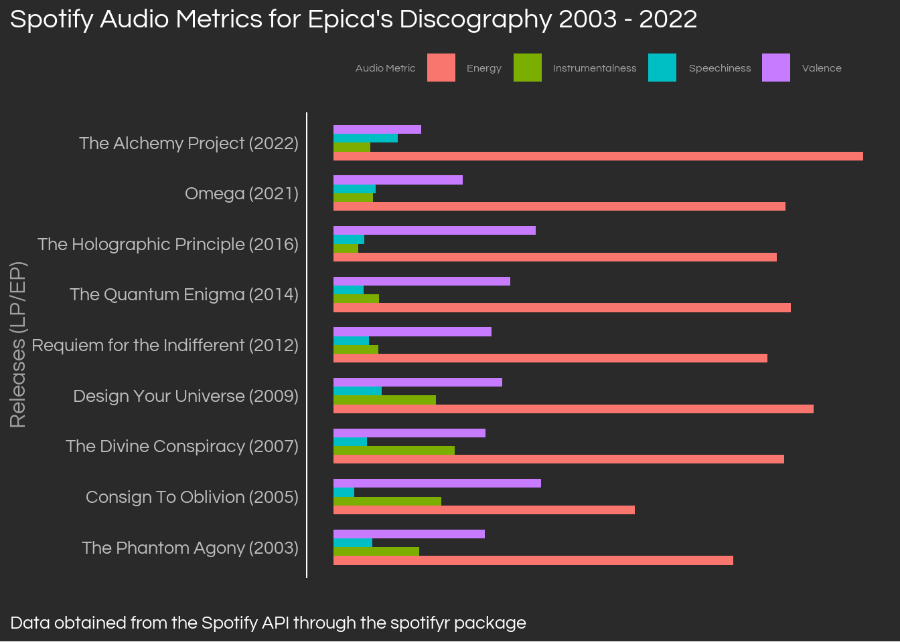

Code
# Setup the access token
access_token <- get_spotify_access_token(client_id = Sys.getenv('SPOTIFY_CLIENT_ID'),
client_secret = Sys.getenv('SPOTIFY_CLIENT_SECRET'))
# Define an album/EPs vector, a year vector, to use later as well as the artist id
epica_spotify_id <- '5HA5aLY3jJV7eimXWkRBBp'
epica_releases_year <-
data.frame(
release_spotify = c("The Phantom Agony (Expanded Edition)", "Consign To Oblivion (Expanded Edition)",
"The Divine Conspiracy", "Design Your Universe", "Requiem for the Indifferent",
"The Quantum Enigma", "The Holographic Principle","The Solace System",
"Omega", "The Alchemy Project"),
release_name = c("The Phantom Agony", "Consign To Oblivion", "The Divine Conspiracy", "Design Your Universe",
"Requiem for the Indifferent", "The Quantum Enigma", "The Holographic Principle",
"The Solace System", "Omega", "The Alchemy Project"),
release_year = c(2003, 2005, 2007, 2009, 2012, 2014, 2016, 2017, 2021, 2022)
)
# Get metrics at the track level and filter for the selection of releases I chose
epica_track_metrics <-
get_artist_audio_features(epica_spotify_id, include_groups = c('album', 'single')) %>%
select(track_name,
album_name,
album_id,
energy,
loudness,
speechiness,
acousticness,
instrumentalness,
liveness,
valence,
tempo) %>%
filter(album_name %in% epica_releases_year$release_spotify)
# Group at the album level, reshape to long form, then plot
epica_album_metrics <-
epica_track_metrics %>%
group_by(album_name) %>%
summarise_if(is.numeric, mean) %>%
left_join(epica_releases_year, by = c('album_name' = 'release_spotify')) %>%
arrange(desc(release_year)) %>%
select(-album_name) %>%
mutate(loudness = abs(loudness),
release_name_year = paste(release_name,' ', '(', release_year, ')', sep = '')) %>%
relocate(release_name, release_name_year, release_year) %>%
gather(metric, value, energy, loudness, speechiness, acousticness, instrumentalness, liveness, valence, tempo)
epica_album_metrics %>%
filter(metric %in% c('energy', 'valence', 'instrumentalness', 'speechiness')) %>%
ggplot(aes(reorder(release_name_year, release_year), value, fill = metric)) +
geom_col(width = 0.7, position = position_dodge(width = 0.7)) +
coord_flip() +
scale_fill_discrete(labels = c('Energy', 'Instrumentalness', 'Speechiness', 'Valence')) +
labs(title = "Spotify Audio Metrics for Epica's Discography 2003 - 2022",
y = '',
x = 'Releases (LP/EP)',
caption = 'Data obtained from the Spotify API through the spotifyr package',
fill = 'Audio Metric') +
theme_daniel +
theme(axis.text.x = element_blank(),
axis.text.y = element_text(colour = 'gray'),
legend.text = element_text(size = 12),
legend.title = element_text(size = 12),
legend.position = 'top',
legend.direction = 'horizontal') 